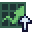

Idle Obelisk Miner
Gift Simulator
Because the codes and Obelisk rewards is not enough and you want more.
Or you are just sad about your rolls from a bunch of gifts in the real game.
Settings
Obelisk :
Skip opening animation
Highest World :
1
2
3
4
Black Hole 1 unlocked?
Ascension :
0
1
2
Bomb Cap :
Skins :
/ 13
Gilded :
/ 13
Stickers owned

Click to get another gift!
0
1x
Auto
Open
Pause on
Rare Loot
Pause on
Multi Loot
Minimum multiplier:
×3
×10
×30
×50
×150
×500
×1500
Loot Total
Refresh page (F5) to reset total loot

 0
0